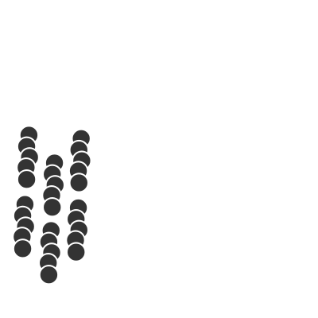

Fotosynthese
Calvin-Zyklus (= Dunkelreaktion)

Abb. 1: C-Körperschema des Calvin-Zyklus
- Sechs Kohlenstoffdioxid Moleküle binden an sechs C5-Körper des Aktzeptormoleküls Ribulose.
- Es entstehen sechs C6-Körper eines instabilen Zwischenprodukts, welches sofort zu zwölf C3-Körpern
Glycerinsäure zerfällt.
- Diese werden zu zwölf C3-Körpern Glycerinaldehyd reduziert.
- Pro Molekül Glycerinsäure wird dabei
ein Molekül NADPH₂⁺ zu
einem Molekül NADP⁺ oxidiert.
Pro gebildetem Glucose Molekül also zwölf!
- Es werden pro gebildetem Molekül Glucose 18 Moleküle ATP verbraucht.
Externe Links
Dunkelreaktion
Calvin-Zyklus